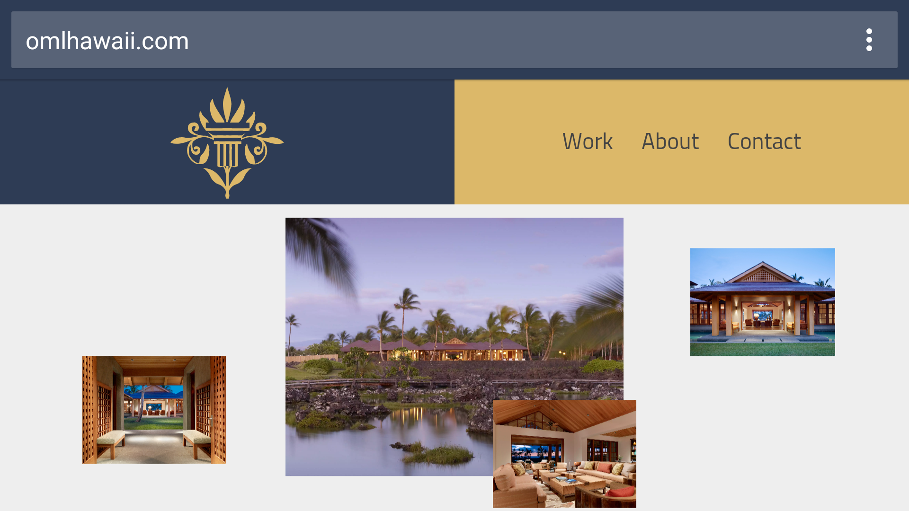
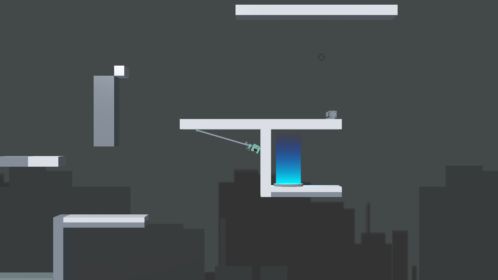
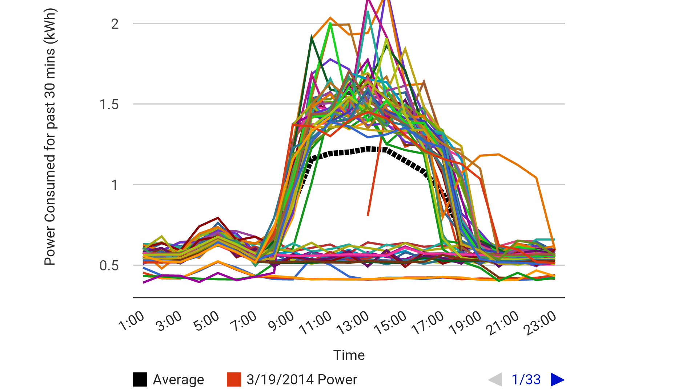

Education
Undergraduate
 University of British ColumbiaComputer Science - Bachelor of Science2015 to 2020 (expected)
University of British ColumbiaComputer Science - Bachelor of Science2015 to 2020 (expected)High School
 Myron B. Thompson AcademyGraduated with Honors2011 to 2015
Myron B. Thompson AcademyGraduated with Honors2011 to 2015My name is Tiger Oakes (yes, really). I am a programmer who creates software, websites, and other things that appear on screens.
I'm a student at the University of British Columbia and currently self-employed. I've created a variety of projects, which have been featured in the Congressional App Challenge and news outlets such as the Star Advertiser, West Hawaii Today, and Hawaii Public Radio.
View my workApp for riders of the bus in Hawaii, upgrading their basic paper schedules into digital form. The app is designed to load and run quickly, and cache itself so users can access the website while offline. The backend is designed so the schedule data can be uploaded to Google Maps and other mapping systems.
DevelopmentBuilt for Country of Hawaii View ProjectI worked with OML Contracting to redesign their portfolio. We settled on a design using animation to direct attention to the building photos. The site is designed to hide loading times by quickly downloading enough code to display the basic site, then running in the background to add on additional functionality and design.
Design, DevelopmentOML Contracting Co View Project Latch On is a prototype game I developed which focuses on using a grappling hook to navigate puzzles and platforms. Using the Unity engine, the game can run quickly on a variety of platforms to accomodate the speedy gameplay.
Design, DevelopmentPersonal Project View Project To visualize data generated by electricity monitoring devices, I created a website that could parse files generated by monitoring systems in Myron B. Thompson Academy and transform them into graphs. Data could be filtered to show average power consumption, and custom files could be uploaded without the need to update the server. Using this program, students were able to identify odd electricity usage, such as a spike in power used by the refigerator at 4am.
Conception, DevelopmentBuilt for Myron B. Thompson STEM class University of British ColumbiaComputer Science - Bachelor of Science2015 to 2020 (expected)Myron B. Thompson AcademyGraduated with Honors2011 to 2015